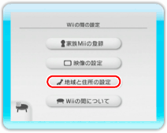
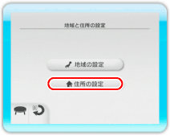
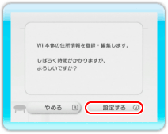
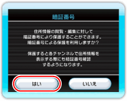
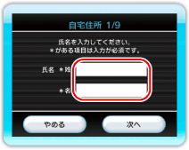
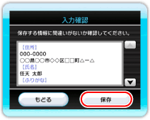

お届けサービスの申し込みに必要な住所情報（氏名、住所、電話番号など）をWii本体に登録します。
すでに住所情報を用いたサービスをご利用になっていて、氏名の「ふりがな」をまだ登録していない方は、画面の指示に従って住所情報に「ふりがな」を登録してください。
登録した住所情報を変更・削除する方法については、
P.23をご覧ください。
「Wiiの間ショッピング」で使用する住所情報は、「Wiiの間ショッピング」の「お客様情報」で登録できます（→P.10）。
22 |
自宅の住所を登録する |
 |
|

1.「設定」の画面(→P.15)で、「地域と住所の設定」をポイントして

2.「住所の設定」をポイントして

3.「設定する」を選ぶ

4.住所情報の暗証番号を設定する ※設定した暗証番号を忘れないようにしてください。お届けサービスを利用する際はこの暗証番号の入力が必要です。暗証番号を忘れた場合は、すべての住所情報を一度消去してから再度入力する必要があります（→P.24）。 「いいえ」を選んだ場合は、暗証番号を設定せずに次へ進みます。暗証番号は、あとから設定することもできます（→P.24）。

5.住所情報の各項目を入力する ※お届けサービスをお申し込みいただく場合、パソコンや携帯電話のメールアドレスを必ず登録してください（WiiばんごうによるWiiのメールアドレスは使えません）。

6.入力した内容を確認する ※入力した内容は、商品のお届け先（自宅住所）としてWii本体に保存されます。内容に間違いがあると、お申し込みいただいた商品をお届けできない場合があります。ご注意ください。 ※お届けサービスでお申し込みいただいた商品をお届けできるのは、「自宅住所」に登録された住所のみです。
これで、住所情報の登録は完了です。
|
 |
 |
 |